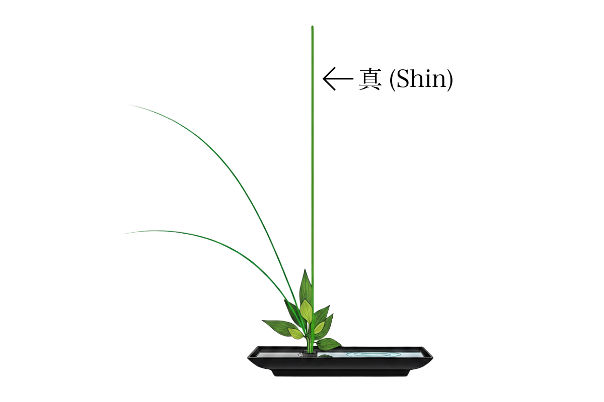
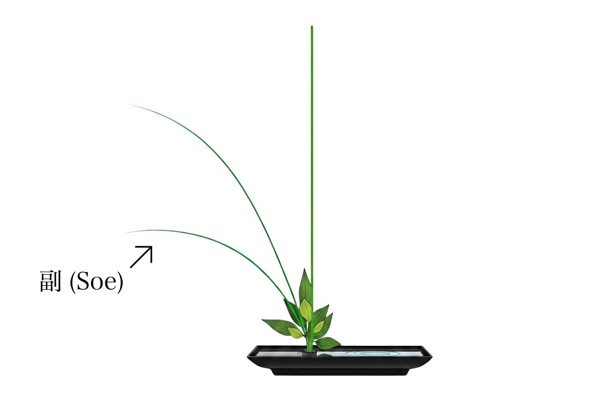
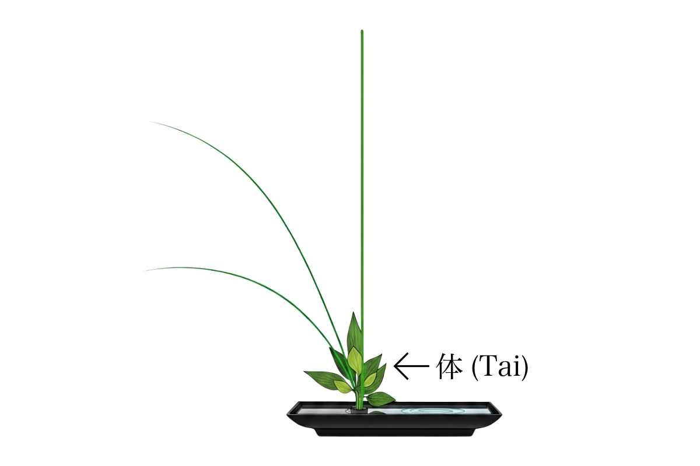

生花とは
生花（いけばな）は、自然の形そのものを再現するのではなく、自然の理（ことわり）を「線・面・空間」で抽象的に表現します。花材の生気や季節感を活かし、余白（空間）に美を見出すのが特徴です。
- 自然観：移ろい・不完全の美（わび・さび）
- 構成観：非対称・三角構成・リズム
- 鑑賞観：正面性と奥行、床の間文化に由来
歴史
室町時代
仏前に花を供える「供花」から発展。池坊の成立。
桃山時代
豪壮な意匠の立花が発展。権威と美の象徴に。
江戸時代
町人文化の広がりとともに生花が普及。型の洗練。
明治〜昭和
近代化に伴い家庭に広がる。盛花・投入が定着。
現代
自由花・インスタレーションなど多様化。国際的な広がり。
基本原理（真・副・体）

真（しん）
作品の主軸となる最長の線。天を象徴し、動きの方向と気品を決めます。

副（そえ）
真を引き立てる補助線。人を象徴し、角度と長さでバランスを取ります。

体（たい）
足元をまとめる線。地を象徴し、器との一体感と安定をもたらします。
注：呼称や角度・比率は流派により差異がありますが、三要素の関係性を理解することが学習の近道です。
主な流派の特徴（概略）
池坊（いけのぼう）
最古の流派。立花・生花・自由花まで体系的。
- 型の理論が明快
- 季節感と格の表現
- 床の間文化との親和性
草月流（そうげつりゅう）
自由な発想で現代空間とも相性が良い。
- 素材の個性を活かす
- 大型造形・現代美術との接続
- 生活空間での展開
小原流（おはらりゅう）
盛花を確立。写景様式・色彩理論が豊富。
- 水盤と剣山の造形
- 色面の響き
- 写景（景色の写し）
基本の道具
花鋏
切り口を美しく保ち吸水を良くする専用鋏。安全のため刃の向きに注意。
剣山／花留め
水盤で花材を固定。安全性を高めるならシリコン台座付きも良い。
花器
水盤（浅鉢）／投入用花瓶。作品の性格（格）に合う器を選ぶ。
霧吹き
花材の乾燥を防ぎ、作業中のコンディションを保つ。
新聞紙・布
作業台の保護や切り口の保水に。
メジャー
比率の確認用。真・副・体の長さを整えるのに便利。
基本の型と配置の考え方
盛花（もりばな）

水盤に剣山を置き、広がりを活かす型。水面を構成に取り込めるため、写景表現や季節感の演出に向きます。
投入（なげいれ）

口の狭い花瓶に枝を組み合わせて留める型。線の動きと垂直性が際立ち、凛とした雰囲気に仕上がります。
比率の目安
- 真：器の直径（または高さ）の約1.5〜2倍
- 副：真の約2/3〜3/4
- 体：真の約1/3〜1/2
※流派・花材により調整します。
季節の花材（例）
春
桜チューリップレンギョウ菜の花
夏
アジサイヒマワリヤナギミスカンサス
秋
リンドウススキダリアモミジ
冬
南天椿千両松
基本の作り方ステップ（盛花の例）
- 器と剣山を用意し、水を張る（剣山は手前寄りに）。
- 花材を観察：向き・節・葉の付き方・傷みを確認。
- 長さのあたりを取る：真→副→体の順に大まかな比率を決める。
- 切り口を斜めに整え、すぐに吸水させる（湯上げが必要な花材も）。
- 真を留め、角度と正面を決める。次に副で動きを補い、体で足元をまとめる。
- 空間を整える：詰めすぎず、線が呼吸できる間を残す。
- 仕上げ：水面や器の汚れを拭き、鑑賞位置で最終確認。
よくある質問
生花は「空間」との関係性を重視し、線（枝の動き）と間の美を表現します。フラワーアレンジメントは主に量感や色彩の調和を重視し、器から溢れる豊かさが特徴です。
花鋏、剣山（または花留め）、花器（浅い水盤か口の狭い花瓶）、霧吹きがあれば十分です。
基本の三要素（真・副・体）を中心に3〜7本程度から始めるとバランスが取りやすいです。
学びを深めるヒント
- 自宅の光が入る場所で、朝の短時間でも毎週いけてみる。
- 同じ花材で器だけを変えて3パターン作り、空間の違いを観察する。
- 美術館で彫刻の「空間の取り方」を観察し、線の動きのヒントにする。